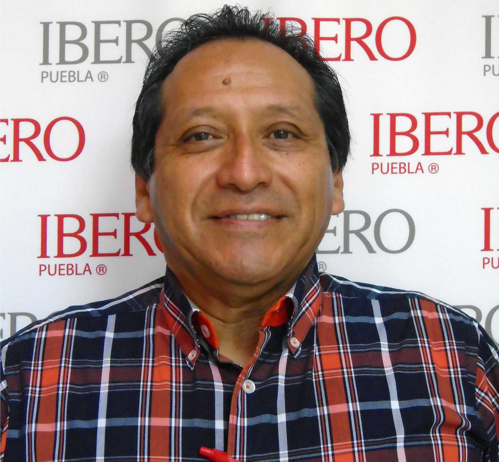

Academia e Investigación
Departamento de Ciencias e Ingenierías | Universidad Iberoamericana Puebla, México.
MEMBSA (Ing. Mecatrónica, Electrónica, Mecánica, Biomédica, Sistemas Computacionales y Automotriz)
Núcleo de Ingeniería Biomédica, Electrónica, Mecatrónica, Mecánica y Sistemas: Este núcleo reúne una variedad de disciplinas de ingeniería centradas en el diseño y la creación de tecnologías avanzadas para diversos sectores. Su trabajo abarca desde el desarrollo de dispositivos médicos y sistemas electrónicos, hasta la creación de soluciones de robótica y automatización, y la mejora de las técnicas de ingeniería de sistemas.
Academicos:
Ana Moreno Hernandez

Huber Girón Nieto
Adrian Maldonado García
Jose Antonio Benitez
Oliver Ochoa Garcia
Rafael Perez Aguirre
Ultimos proyectos:

Construcción de un vehículo Baja SAE
Este proyecto aborda la construcción de un vehículo monoplaza para la competencia Baja SAE, con especial atención en la reducción de peso y el diseño eficiente. Se subraya la importancia de la planeación y gestión para garantizar un desempeño exitoso en la competencia.
Prototipo de manija interior del vehículo Golf GTI 2018 marca Volkswagen a base de fibra de coco y poliestireno expandido reciclado para la puerta de ocupantes del lado derecho
Este estudio desarrolla un prototipo de manija de vehículo utilizando fibra de coco y unicel, materiales sostenibles y biodegradables. Se realizan pruebas de tensión y resistencia, determinando una composición óptima para cumplir con los estándares de calidad automotriz, reduciendo así el impacto ambiental.
ROBBIE – Robot auxiliar de tipo SCARA controlado por voz para la alimentación y limpieza facial de pacientes que padezcan enfermedades del sistema neuromusculoesquelético del tren superior
Este proyecto desarrolla un prototipo de robot auxiliar SCARA controlado por voz, diseñado para asistir a personas con enfermedades neuromusculoesqueléticas en tareas como la alimentación y limpieza facial. El objetivo es mejorar su calidad de vida, fomentar la autonomía y promover un mundo más inclusivo.
Desarrollo de un prototipo de robot móvil autónomo con navegación basada en visión por computadora para la asistencia de adultos mayores dentro de entornos controlados
Este artículo aborda el desarrollo de un robot móvil autónomo para asistir a adultos mayores. El prototipo, que responde a comandos de voz y puede navegar en base a la visión por computadora, tiene como objetivo ayudar en la movilidad de pertenencias, contribuyendo a satisfacer las crecientes necesidades de asistencia en esta población
Desarrollo de un prototipo de robot móvil autónomo con capacidad de desplazamiento y transporte de paquetes
Este proyecto describe el desarrollo de un robot móvil autónomo capaz de transportar paquetes de hasta 3 kg. Mediante el uso de una cámara de control y una estación de carga automatizada, el robot puede navegar y detectar la posición de paquetes, siendo útil en aplicaciones industriales.
LIIN (Ing. Industrial, Negocios y Logistica)
Núcleo de Ingeniería Logística, Industrial y Negocios: En este núcleo, los profesionales combinan las técnicas de ingeniería, los principios empresariales y la gestión de la cadena de suministro para mejorar la eficiencia y la productividad de las operaciones comerciales. Su trabajo abarca desde la optimización de los procesos de producción hasta la mejora de las estrategias de distribución y la implementación de soluciones de negocio sostenibles.
Academicos:
Yvonne Lomas Mountandon
María Guadalupe López Molina

David Jaramillo Bañuelos
Víctor Hernández Reyes
Ultimos proyectos:
Análisis de reclamos y del proceso de el desarrollo de los proveedores de remaches para la empresa de manufactura de embrague y convertidor de torque
Este proyecto busca mejorar el proceso de desarrollo de proveedores de remaches en una empresa de manufactura de embragues y convertidores de torque. Usando herramientas Lean Six Sigma, se analizaron los reclamos. Se encontró que el 8% de los reclamos se debían a los remaches, eran responsabilidad de la mayoría de estos reclamos. El estudio ayudó a identificar las variables que afectan este reclamo y propone un plan de acción correctivo y preventivo para mejorar el proceso de selección y desarrollo de proveedores.
Desarrollo de plan de negocio para reducir costos de intermediación del nopal cultivado por agricultores minoristas en Tlaxcalancingo, Puebla
Este proyecto propone un plan de negocio para apoyar a los agricultores minoristas de nopal en Puebla, México. Se busca evitar intermediarios, mejorar la remuneración de los agricultores y potenciar sus habilidades en finanzas y marketing. La estrategia incluye la formación de una cooperativa agrícola.

Rediseño de ruedas mecanum para su uso en una plataforma vehicular autónoma considerando materiales adecuados, resistencia, desempeño y capacidad de movimiento evaluando su capacidad con tecnologías avanzadas de manufactura
Este proyecto busca rediseñar ruedas mecanum para vehículos autónomos en espacios limitados, adaptándolas para ser fabricadas con máquinas Haas. El rediseño y las pruebas de estrés, resistencia y desempeño buscan crear ruedas de alta calidad que puedan soportar cargas y velocidades significativas
Quimica y Biotecnología
Núcleo de Química y Biotecnología: Este núcleo se dedica a la investigación y desarrollo en los campos de la química y la biotecnología. Su trabajo incluye el diseño y síntesis de nuevos materiales, el estudio de procesos bioquímicos y la creación de tecnologías innovadoras para el cuidado del medio ambiente y la salud humana.
Academicos:
Rocío Ramírez Rodríguez
María Jose Rivas Arreola
César Augusto Barrales Cortés
Ultimos proyectos:

Caracterización de copolímero a base de residuos de tilapia, quitosano y acetato de calcio
Este estudio busca mejorar las propiedades de los hidrogeles de gelatina de pescado para su uso en apósitos médicos, mediante la adición de quitosano y acetato de calcio. Los copolímeros resultantes demostraron mejor resistencia y funcionalidad, siendo el copolímero GQA el más adecuado para la aplicación biomédica.
Evaluación de una matriz descelularizada de espinaca como andamio celular con potencial para la regeneración de heridas
El estudio aborda la resistencia a antibióticos mediante fibras poliméricas de PVP y PLA con clorhexidina incorporada. Se examinaron interacciones moleculares, características y liberación de fármaco. Las fibras demostraron ser efectivas para liberaciones rápidas (PVP y PVP/PLA/PVP) y liberaciones a largo plazo (PLA y PLA/PVP/PLA).
Desarrollo de un prototipo de película de matriz extracelular con el uso de Iresine herbstii
Este estudio presenta la obtención de una matriz descelularizada de la hoja vegetal Iresine herbstii, que conserva las estructuras del sistema vascular. Esta matriz facilita la adhesión y proliferación celular, mostrando potencial para la ingeniería tisular y la regeneración de masa tisular vascularizada.
Ingeniería Civil
Núcleo de Ingeniería Civil: Este núcleo se centra en la creación, diseño y mantenimiento de infraestructuras que sostienen nuestra sociedad. Los proyectos varían desde la construcción de edificios y carreteras hasta la gestión de agua y energía. Los miembros trabajan hacia soluciones innovadoras y sostenibles que mejoran la calidad de vida y la resiliencia frente a los cambios climáticos.
Academicos:

Miguel Angel Figueras Corte
Ultimos proyectos:
Desarrollo de prototipo de adoquín de uso vial y/o peatonal que incorpore escombro triturado como agregado fino
Este proyecto busca reutilizar los escombros de construcción para fabricar adoquines para uso peatonal y vehicular. Se logró un prototipo que cumple con las especificaciones geométricas, pero requiere más pruebas para confirmar su resistencia a la compresión según los estándares requeridos.
Análisis de conexiones de bambú para aplicaciones estructurales
El estudio examina el uso del bambú, particularmente el bambú plumoso tratado, en la construcción. Se desarrollaron y analizaron tres propuestas de conexiones estructurales: encajada en forma de T, atornillada en forma de T y de esquina. La conexión encajada en forma de T mostró el mejor rendimiento.
Evaluación de construcción de un tren interurbano en el estado de Puebla que conecte las ciudades de Puebla y Tehuacán
Este estudio evalúa la factibilidad de un tren interurbano entre Puebla y Tehuacán, buscando una nueva alternativa de movilidad.